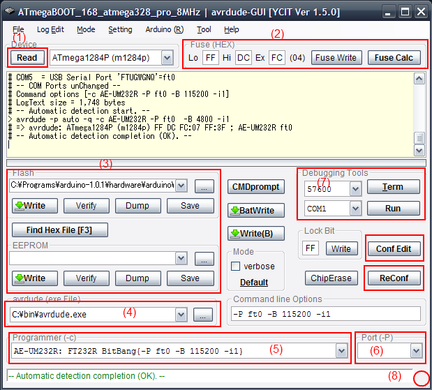
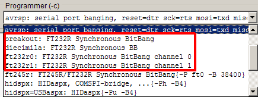
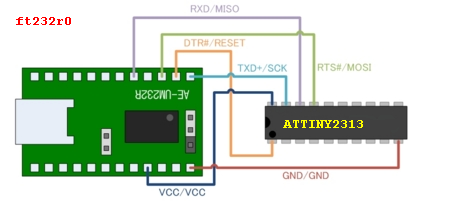

AVRDUDE
■ 関連リンク
avrdude-GUI関係のメモ（備忘録）

[1] 最初に設定する項目
・「avrdude (exe file)(2)」と「Programmer(-c)(3)」の欄です。利用する環境
に合わせ、設定してください。(2) は、省略時は arrdude-GUI.exe と同じ場所
の avrdude.exe が指定されます。
【注意点】
複数のポート設定が利用できるライタを選択する場合には、ポートの自動設定
は機能しない場合があります。その場合には、「Port(-P)」も適切に選択して
ください。
[2] 使い方
・[1] の設定を完了後、GUI を再起動し、ターゲット AVR マイコンと ISP ケー
ブルを接続します。[Read] ボタン (1) をクリックすると Fuse 欄に Fuse 設
定値が表示されます。
・書込みたい HEX ファイルを GUI フォームの任意の場所にドロップすれば、Flash,
EEPROM 欄にセットされ、[Write(B)] ボタンで書き込みできます。
※ 各種のボタンには機能を説明するヒント表示機能があり、希望するボタン上でマ
ウスカーソルを２～３秒静止すれば、そのボタンの機能を確認できます。
FT232Rを使ったライタを例にとり、説明します。
■ FT232RLライタの選択
以下のように、FT232Rが含まれるライタから選択します。

AE-UM232R = FT232R BitBang{-P ft0 -B 57600 -i1}
breakout = FT232R Synchronous BitBang
diecimila = FT232R Synchronous BB
ft232r0 = FT232R Synchronous BitBang channel 0
ft232r1 = FT232R Synchronous BitBang channel 1
ft245r = FT245R/FT232R Synchronous BitBang{-P ft0 -B 38400}
※FT232RとAVRマイコンの結線方法は複数ありますので、採用した結線方法に
合わせ、適切なものを選択してください（詳細は、同梱の説明書を参照）。
■ 結線方法（基本信号線のみで接続可能）
ft245r : sample configration for FT232R/FT245R
ft232r0 : FT232R channel 0
miso : D1/RXD
sck : D2/RTS
mosi : D0/TXD
reset : D4/DTR
※ HIDaspxのファームを書き込む場合の結線方法(ft232r0を指定すること)
■ コマンドラインオプション設定例
(1) -P ft0 -B 38400 -E reset .... 1MHz動作時（省略時設定）
(2) -P ft0 -E reset ............. 8MHz動作時 （-B 230400 と解釈)
(3) -P ft0 -B 1000000 -E reset ... 16MHz動作時
※ -E resetを指定した場合のみ、仮想COMポートの機能を復元します。
ISP完了後に通信する時には、-E resetを指定します。
■ 結線方法（シリアル通信機能を利用せず、Tiny2313に書きこむのが目的の場合）

■ 結線方法（シリアル通信機能との共存可能、通常はこちらを推奨）
diecimila :
ft232r1 : FT232R channel 1
AVR : FT232RLの信号線
miso : D3/CTS
sck : D5/DSR
mosi : D6/DCD
reset: D7/RI
This document was generated by Senshu Hiroyuki on November 1, 2012 using texi2html 1.82.